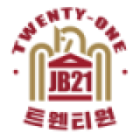

팀프로젝트를 소개합니다.

- 저희 팀은 주제로 잡지를 선택했습니다. 불과 몇 년 전만 해도 신문이나 잡지를 구매해 보는 일이 많았지만, 스마트폰이 대중화되며 신문이나 잡지를 구매하는 일이 적어졌습니다. 잡지만의 개성을 살리고 인터넷의 장점을 넣어 웹 잡지를 만들어 보면 어떨까 하는 의견이 나왔습니다. 잡지에게는 게임, 여행, 셀럽, 문화의 주제를 하나씩 맡아 내용을 구성할 예정입니다. JB21은 게임 카테고리에서는 게임에 관한 소개나 팁들을, 여행 카테고리에서는 추천 여행지를, 셀럽 카테고리에서는 유튜버나 연예인에 대하여, 문화 카테고리는 우리가 한가한 시간에 즐기는 문화생활인 영화나 음악 등을 실을 예정입니다. 아직 웹 잡지는 준비 중이지만 많은 관심 부탁드립니다.
- 팀원 홈페이지 링크